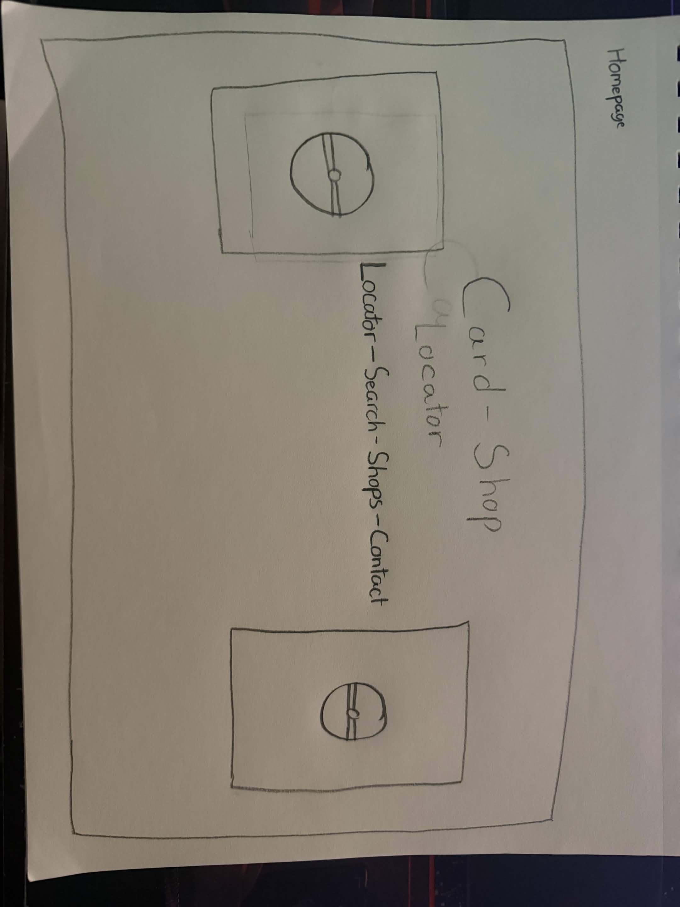

Objectives of the Site:
- To create a platform that shows all the most popular card shops in Southern Maryland
- With each one give a descriptiopn of what they offer and pictures of the inside and out of the location and the location.
- Includes even held at each location and the ratings to established the credibility and repuation it has in the area.
Intended Audience
The audience is anyone that want to get into table top games, wanting to sell/buy cards, and participate in trading card tournaments.
Features (Subject to change)
- A drop down menu for the list of card shop in the Maryland area.
- Each one in the list goes its individual page that shows ratings and picutres of each location.
- A locator (Shows around 4 shop in the area) and a search bar if somone is looking for a certain scard shop or more detials of said shop.
Site Map
.png)
- The content will be organized by the order like the fisrt will be locator, follwed by search, shops, lastly contact Then each page will a back link to the homepage tif the user want to go to a different page.
- the sub-topic that might be invlude is in the shops page there will be topic about the shop and the event hosted at the location.
- The included are a locaotor map, search bar,c ontact, and shops.
- The page layout is all pages are interconnect are each page will have ltext tthat goes to a specific page. The navigation will be in in the top left of each page.
Wireframe
